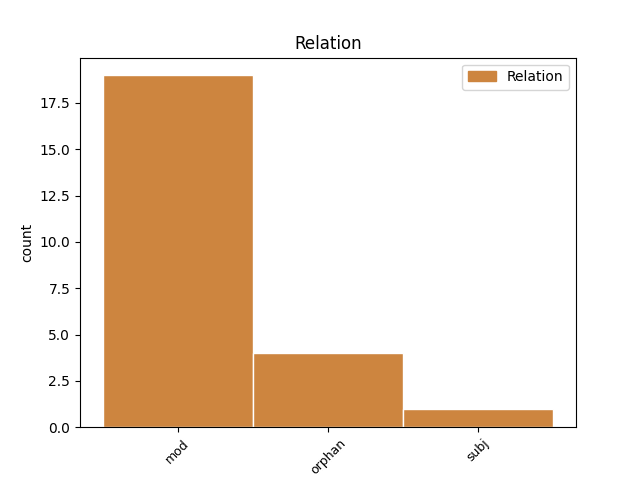
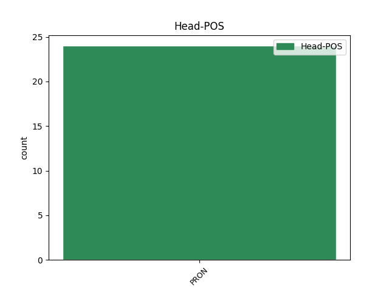
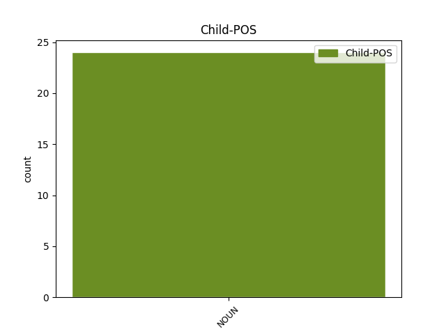

Distribution of features within this leaf



Agreement Rules sorted by frequency.
- When the dependent token is the modifer(mod) of the head token, and the head token is PRON and the dependent token is NOUN.
1 ƕa ƕas PRON Pi Case=Acc|Gender=Neut|Number=Sing|PronType=Int 0 _ _ _
2 auk _ _ _ _ 0 _ _ _
3 awiliude awiliuþ NOUN Nb Case=Gen|Gender=Neut|Number=Plur 1 mod _ ref=1THESS_3.9
4 magum _ _ _ _ 0 _ _ _
5 usgildan _ _ _ _ 0 _ _ _
6 guda _ _ _ _ 0 _ _ _
7 bi _ _ _ _ 0 _ _ _
8 izwis _ _ _ _ 0 _ _ _
9 ana _ _ _ _ 0 _ _ _
10 allai _ _ _ _ 0 _ _ _
11 fahedai _ _ _ _ 0 _ _ _
12 þizaiei _ _ _ _ 0 _ _ _
13 faginom _ _ _ _ 0 _ _ _
14 in _ _ _ _ 0 _ _ _
15 izwara _ _ _ _ 0 _ _ _
16 faura _ _ _ _ 0 _ _ _
17 guda _ _ _ _ 0 _ _ _
18 unsaramma _ _ _ _ 0 _ _ _
19 naht _ _ _ _ 0 _ _ _
20 jah _ _ _ _ 0 _ _ _
21 daga _ _ _ _ 0 _ _ _
22 ufarassau _ _ _ _ 0 _ _ _
23 bidjandans _ _ _ _ 0 _ _ _
24 ei _ _ _ _ 0 _ _ _
25 gasaiƕaima _ _ _ _ 0 _ _ _
26 andwairþja _ _ _ _ 0 _ _ _
27 izwara _ _ _ _ 0 _ _ _
28 jah _ _ _ _ 0 _ _ _
29 ustiuhaima _ _ _ _ 0 _ _ _
30 waninassu _ _ _ _ 0 _ _ _
31 galaubeinais _ _ _ _ 0 _ _ _
32 izwaraizos _ _ _ _ 0 _ _ _
1 iþ _ _ _ _ 0 _ _ _
2 mis _ _ _ _ 0 _ _ _
3 ni _ _ _ _ 0 _ _ _
4 sijai _ _ _ _ 0 _ _ _
5 ƕopan _ _ _ _ 0 _ _ _
6 ni _ _ _ _ 0 _ _ _
7 in _ _ _ _ 0 _ _ _
8 waihtai _ _ _ _ 0 _ _ _
9 niba _ _ _ _ 0 _ _ _
10 in _ _ _ _ 0 _ _ _
11 galgins _ _ _ _ 0 _ _ _
12 fraujins _ _ _ _ 0 _ _ _
13 unsaris _ _ _ _ 0 _ _ _
14 Iesuis _ _ _ _ 0 _ _ _
15 Xristaus _ _ _ _ 0 _ _ _
16 þairh _ _ _ _ 0 _ _ _
17 þanei _ _ _ _ 0 _ _ _
18 mis _ _ _ _ 0 _ _ _
19 fairƕus _ _ _ _ 0 _ _ _
20 ushramiþs _ _ _ _ 0 _ _ _
21 ist _ _ _ _ 0 _ _ _
22 jah _ _ _ _ 0 _ _ _
23 ik ik PRON Pp Case=Nom|Gender=Masc|Number=Sing|Person=1|PronType=Prs 0 _ _ _
24 fairƕau fairƕus NOUN Nb Case=Dat|Gender=Masc|Number=Sing 23 orphan _ ref=GAL_6.14
1 usbida _ _ _ _ 0 _ _ _
2 auk _ _ _ _ 0 _ _ _
3 anaþaima _ _ _ _ 0 _ _ _
4 wisan _ _ _ _ 0 _ _ _
5 silba _ _ _ _ 0 _ _ _
6 ik _ _ _ _ 0 _ _ _
7 af _ _ _ _ 0 _ _ _
8 Xristau _ _ _ _ 0 _ _ _
9 faur _ _ _ _ 0 _ _ _
10 broþruns _ _ _ _ 0 _ _ _
11 meinans _ _ _ _ 0 _ _ _
12 þans _ _ _ _ 0 _ _ _
13 samakunjans _ _ _ _ 0 _ _ _
14 bi _ _ _ _ 0 _ _ _
15 leika _ _ _ _ 0 _ _ _
16 þaiei _ _ _ _ 0 _ _ _
17 sind _ _ _ _ 0 _ _ _
18 Israeleitai _ _ _ _ 0 _ _ _
19 þizeei _ _ _ _ 0 _ _ _
20 ist _ _ _ _ 0 _ _ _
21 frastisibja _ _ _ _ 0 _ _ _
22 jah _ _ _ _ 0 _ _ _
23 wulþus _ _ _ _ 0 _ _ _
24 jah _ _ _ _ 0 _ _ _
25 witodis _ _ _ _ 0 _ _ _
26 garaideins _ _ _ _ 0 _ _ _
27 jah _ _ _ _ 0 _ _ _
28 triggwos _ _ _ _ 0 _ _ _
29 jah _ _ _ _ 0 _ _ _
30 skalkinassus _ _ _ _ 0 _ _ _
31 jah _ _ _ _ 0 _ _ _
32 gahaita _ _ _ _ 0 _ _ _
33 þizeei saei PRON Pr Case=Gen|Gender=Masc|Number=Plur|PronType=Rel 0 _ _ _
34 attans atta NOUN Nb Case=Nom|Gender=Masc|Number=Plur 33 subj _ ref=ROM_9.5
35 jah _ _ _ _ 0 _ _ _
36 us _ _ _ _ 0 _ _ _
37 þaimei _ _ _ _ 0 _ _ _
38 Xristus _ _ _ _ 0 _ _ _
39 bi _ _ _ _ 0 _ _ _
40 leika _ _ _ _ 0 _ _ _
41 saei _ _ _ _ 0 _ _ _
42 ist _ _ _ _ 0 _ _ _
43 ufar _ _ _ _ 0 _ _ _
44 allaim _ _ _ _ 0 _ _ _
45 guþ _ _ _ _ 0 _ _ _
46 þiuþiþs _ _ _ _ 0 _ _ _
47 in _ _ _ _ 0 _ _ _
48 aiwam _ _ _ _ 0 _ _ _
49 amen _ _ _ _ 0 _ _ _
Disagree Examples:
1 aþþan _ _ _ _ 0 _ _ _
2 ƕa ƕas PRON Pi Case=Acc|Gender=Neut|Number=Sing|PronType=Int 0 _ _ _
3 taujis _ _ _ _ 0 _ _ _
4 þu _ _ _ _ 0 _ _ _
5 taikne taikns NOUN Nb Case=Gen|Gender=Fem|Number=Plur 2 mod _ ref=JOHN_6.30
6 ei _ _ _ _ 0 _ _ _
7 saiƕaima _ _ _ _ 0 _ _ _
8 jah _ _ _ _ 0 _ _ _
9 galaubjaima _ _ _ _ 0 _ _ _
10 þus _ _ _ _ 0 _ _ _
1 þammei saei PRON Pr Case=Dat|Gender=Masc|Number=Sing|PronType=Rel 0 _ _ _
2 agis agis NOUN Nb Case=Acc|Gender=Neut|Number=Sing 1 orphan _ ref=ROM_13.7
3 agis _ _ _ _ 0 _ _ _
1 unte _ _ _ _ 0 _ _ _
2 ƕo _ _ _ _ 0 _ _ _
3 dailo _ _ _ _ 0 _ _ _
4 garaihtein _ _ _ _ 0 _ _ _
5 miþ _ _ _ _ 0 _ _ _
6 ungaraihtein _ _ _ _ 0 _ _ _
7 aiþþau _ _ _ _ 0 _ _ _
8 ƕo ƕas PRON Pi Case=Nom|Gender=Fem|Number=Sing|PronType=Int 0 _ _ _
9 gamainduþe _ _ _ _ 0 _ _ _
10 liuhada liuhaþ NOUN Nb Case=Dat|Gender=Neut|Number=Sing 8 orphan _ ref=2COR_6.14
11 miþ _ _ _ _ 0 _ _ _
12 riqiza _ _ _ _ 0 _ _ _